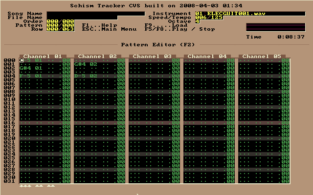

Введение в Schism Tracker
Schism Tracker - это свободная реализация Impulse Tracker, программы для создания высококачественной трекерной музыки. Данная программа не требует особых знаний или оборудования. В Schism Tracker использован движок Modplug с некоторыми изменениями для предоставления проигрывания IT-файлов. Impulse Tracker можно запустить только на i386 совместимых процессорах и только под MS-DOS, в то время как Schism Tracker для графического вывода использует библиотеку SDL, которая поддерживает большинство современных платформ включая Linux, Mac OS X, Windows, BeOS и другие.
Интерфейс Schism Tracker максимально близок к интерфейсу Impulse Tracker, который считается одним из наиболее интуитивно понятных среди трекеров. Именно поэтому Impulse Tracker (а теперь и Schism Tracker) рекомендуют новичкам, делающим свои первые шаги в создании музыки.
Итак, при запуске можно увидеть примерно следующее окно:

Оно может немного сбить с толку новичка: программа якобы сразу предлагает загрузить файл, хотя хочется создать свой, новый. На самом деле, новый пустой проект уже открыт.
Необходимо отметить очень важную деталь, делающую навигацию в редакторе удобной, - все окна, требующиеся для работы, вызываются с помощью функциональных клавиш 'F1' - 'F12'.

Например, по клавише 'F2' можно вызвать редактор паттернов - именно в нём музыкант проводит большую часть своего времени. Так как проект пока пуст, данных в редакторе паттернов пока нет. Например, если нажать на клавиатуре 'Q', то в редактор добавится "C-5 01". Это означает примерно следующее: проиграть инструментом номер 1 ноту с параметрами "C-5".
Однако при попытке воспроизвести мелодию никакого звука не будет, так как нет инструмента, то есть трекер просто не знает как воспроизвести эту ноту. Инструмент предварительно нужно создать.
Сэмпл — небольшой фрагмент оцифрованного инструмента, голоса или другого звукового эффекта. Большинство трекеров позволяют закольцовывать часть сэмпла, имитируя ноты протяженного звучания. Для отображения списка сэмплов в Schism Tracker используется кнопка 'F3':

Schism Tracker не имеет своей библиотеки сэмплов или инструментов. Создать их в Schism Tracker также нельзя. Нужно импортировать уже готовые, например, из WAV-файлов. Они легко ищутся в поисковике по запросу "музыкальные сэмплы скачать". Либо можно взять сэмплы из какого-нибудь трекера, имеющего свою библиотеку сэмплов. Например, MadTracker. Набор простых сэмплов из MadTracker можно взять здесь.

По умолчанию все сэмплы неактивны, а кнопка "play" имеет тёмно красный цвет. Чтобы загрузить сэмпл из файла нужно просто нажать клавишу 'Enter' и выбрать нужный файл.
При добавлении сэмпла Schism Tracker автоматически спросит, создать ли инструмент, соответствующий данному сэмплу. Нужно ответить утвердительно.
После добавления сэмплов список инструментов ('F4') может выглядеть примерно так:

Теперь можно приступить непосредственно к написанию самой мелодии. Делается это в редакторе паттернов ('F2').

Ноты набираются на основной клавиатуре. Каждый ряд отличается параметрами нот. Пробуйте и всё поймёте!  Ведь уникальность предлагаемой авторами трекеров методики состоит в том, что с ее помощью вы можете составлять свои композиции, просто слушая, как звучит тот или иной инструмент, и выбирать подходящий звук.
Ведь уникальность предлагаемой авторами трекеров методики состоит в том, что с ее помощью вы можете составлять свои композиции, просто слушая, как звучит тот или иной инструмент, и выбирать подходящий звук.
Например, знакомая всем с детства песенка "В лесу родилась елочка" для Schism Tracker может выглядеть примерно так:

При работе над мелодией используется большое количество горячих клавиш. Комбинация 'Ctrl'+'BackSpace' отменит все изменения композиции (функция total undo), 'Alt'+'BackSpace' отменит последнее изменение (функция undo), а при нажатии '+' или '-' будет изменен текущий паттерн. Если нужно заменить неправильно набранную ноту - просто наведите на неё курсор и введите правильную ноту. Если текущую позицию курсора нужно очистить используйте '.'. 'Del' же не только очистит текущую позицию, но и поднимет все значения на одну строку вверх. Опции редактора можно вызвать клавишей 'F2', а опции паттерна - 'Ctrl'+'F2'. Проиграть текущий паттерн можно при помощи клавиши 'F6'.

Сохранить композицию можно вызвав главное меню ('Esc'), в нём выбрать 'File menu' - 'Save current'. Либо можно просто нажать клавишу 'F10'. Это откроет окно аналогичное тому, которое мы видели при старте:

Здесь нужно будет ввести имя файла, выбрать его тип (можно и автоматически).
Далее можно выбрать переменные трека: его название, скорость воспроизведения, темп и прочее. Вызвать окно переменных песни можно клавишей 'F12':

Однако даже после проделанных действий наше произведение не хочет проигрываться по клавише 'F5'. Это объясняется тем, что композиция может состоять из нескольких паттернов и трекер должен знать, в каком порядке их воспроизводить. Установить этот порядок можно в списке планирования ('F11').
Кстати, сохранить текущий прогресс можно стандартной горячей клавишей 'Ctrl'+'S'. Сохраняйтесь почаще!
И вот теперь уже любой плеер сможет проиграть вашу композицию. Schism Tracker также сможет воспроизвести её полностью:

Скачать в формате PDF (311.6 kB)
Комментарии
Avega ( aimp.ru )
27.11.2008Познавательная статья! 
Только думаю неплохо бы добавить сюда ссылку на сайт программы, либо на саму программу.
А то как-то неполно.
Сегодня я для себя открыл трекерную музыку  Очень здорово!
Очень здорово! 
 Keval (
Keval (  171612 )
171612 )
28.11.2008Она старинная какаето! или мне так кажеться?